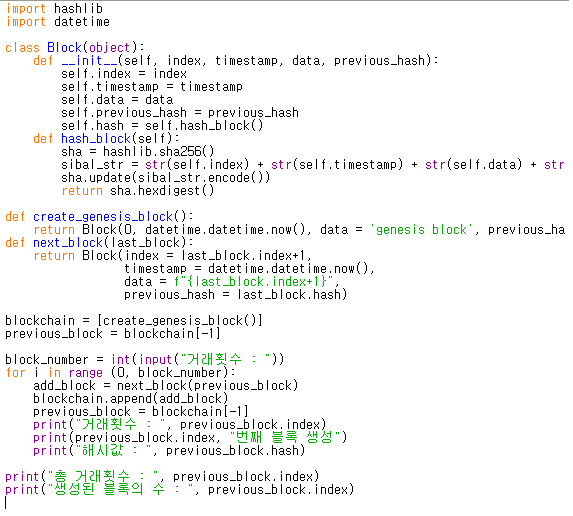
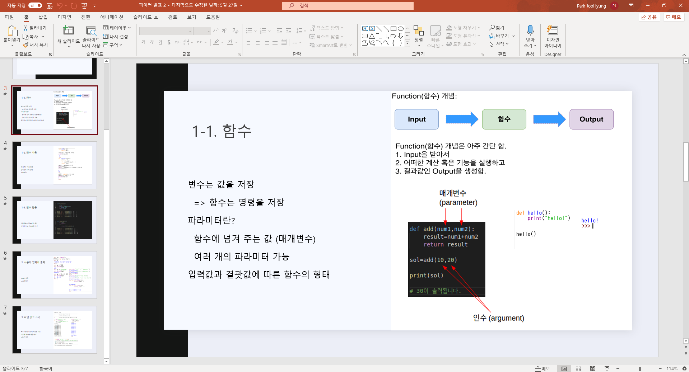
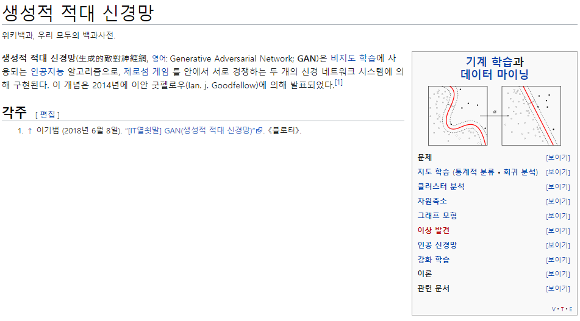

파이썬과 API에 대해 공부했습니다
마이크로소프트의 얼굴인식 API와 Json을 공부해
사진의 얼굴 감정을 분석하는 프로그램을 만들었습니다
파이썬의 기본 문법과 여러 모듈 등 파이썬을 활용하는 방법
파이썬의 2가지 이상의 모듈로 프로그램을 만들기
웹 크롤링을 통해 웹툰 목차를 가져오기등의 활용법을 공부했습니다
떠오르는 화제중 하나인 블록체인에 대해 공부했습니다.
파이썬으로 블록체인의 핵심 중 하나인 hash함수를 이용해
블록체인의 거래를 눈으로 볼 수 있는 프로그래밍 했습니다.
C언어와 파이썬을 이용한 암호학 공부
1학년때 배운 미적분학을 이용한 수학공부 등
암호학과 수학에 접근해 공부했습니다.

21년 2학년 1학기 개강 후
혼자서 묵묵히 과목 위주로 공부를 했습니다
웹프로그래밍 중간발표에서 파이썬 스터디그룹을 발견해 가입후 공부했습니다
평소에 파이썬에 관심이 많아 기초부터 다시 공부했습니다
매주 학교에서 발표하고 의미있는 시간이었습니다

그 외에도 궁금한 분야에 대해 도전했습니다
새로운 도전으로 인공지능 분야에 대해 알아보았습니다
인공신경망과 적대적 신경망(GAN) 등 사전 지식들을 알아보았습니다

21년 2학년 1학기 종강 후
뿐만 아니라 Ubuntu와 같은 Linux로 백엔드 분야를 공부할 예정입니다
Web을 만들기 위한 HTML, CSS, JAVASCRIPT를 공부했으니
React, Angular 같은 프레임워크를 공부하고자 합니다
종강때 시험볼 리눅스 마스터와 정보처리기능사를 준비중입니다
마지막으로.....
지난 5월에 세계 보안 엑스포 SECON을 참관했습니다
SECON을 참관하면서 정보보안의 많은 분야를 접했습니다
느낀점은 하루라도 빨리 실력을 높이는 것
그리고 더욱 다양한 분야를 접해보고 맞는 것을 찾는 것입니다
밑에 도움될만한 사이트를 추천드립니다
Programmers
프로그래머스는 코딩테스트가 중점입니다
BAECKJOON
백준 알고리즘은 다양한 문제를 풀어볼 수 있습니다